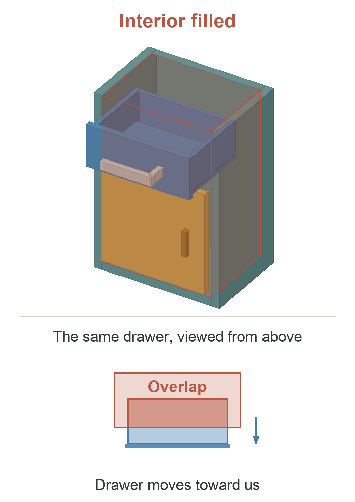
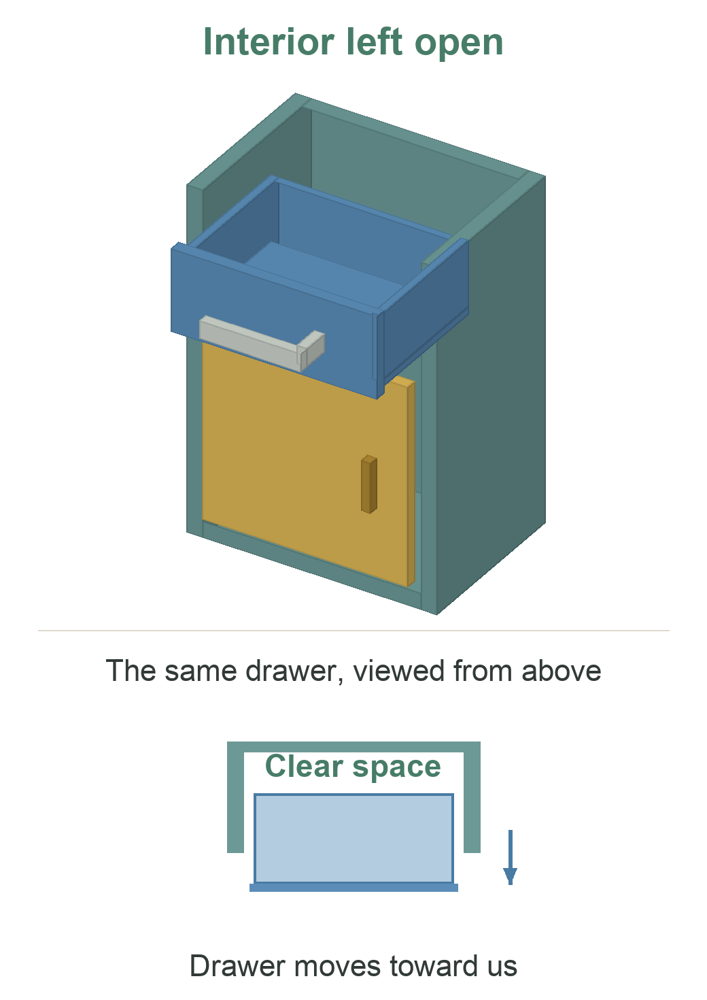

4.2 Preparing a simulation model
Chapter 3 described the cabinet’s parts and allowed movements. A force experiment also needs shapes for contact, physical properties, and a starting pose. This section prepares those inputs for the simulator.
Choose useful shape detail
Mesh resolution refers to how finely the surface is divided into vertices and faces. Image resolution describes the number of pixels in a picture. More closely spaced faces can follow a curved handle, while a flat cabinet wall can be represented with a few large faces.
A detailed visible mesh can make the cabinet look convincing. For contact calculations, we can supply a simpler collision shape: the geometry the simulator uses to decide where objects touch. More complex collision geometry can increase calculation time, so it is useful to keep only the detail needed for the task. The visible mesh can remain detailed.
For a drawer-opening test, the collision shapes represent the cabinet walls, drawer, and handle, with open space for the drawer to slide and a finger to reach behind the grip. Small decorative grooves can be kept in the visible mesh. Collision geometry preserves the details that affect contact and movement; visual geometry preserves the details needed for the picture. Using separate shapes lets us choose an appropriate level of detail for each purpose. MuJoCo’s modeling guide[1] describes how to configure them.
4.2.1 Separate the moving parts
If the whole cabinet is treated as one rigid body, pulling the handle cannot open the drawer independently. We need a separate drawer body connected to the cabinet body.

A joint describes the allowed movement between bodies. Give the drawer a sliding joint along its rails and a maximum opening distance. A door would use a hinge joint instead. For our first test, hold the cabinet body and door still and study only the drawer.
We also check size and orientation here. A model that is accidentally one hundred times too large will not describe the same physical cabinet. These parts, their connections, and their allowed movements are the subject of Chapter 3.
4.2.2 Define where contact happens
Section 3.2.1 introduced the cabinet mesh, and Section 4.2.1 identified its moving parts. At this point in the example, we have the part meshes but have not yet prepared separate collision shapes. Preparing them is the new task in this section.
The part meshes supply the visible shapes used to draw the cabinet. A collision shape is geometry supplied to the simulator to calculate where objects touch.
From one cabinet wall to a collision box
- Start with the wall’s mesh. Use its dimensions and position as a guide.
- Define a box that matches that wall. Give it the wall’s height, width, thickness, and position. This box is the collision shape for the wall in this example.
- Save that definition in the simulation model file. A person or a program can write the box’s dimensions and placement. The simulator reads that definition to create the box it uses for contact calculations.
This box does not need a separate mesh file. Its dimensions and placement are enough to describe it. More complex collision shapes can use mesh files instead. In either case, the shape is an input prepared before contact testing; the test calculates contacts using that shape. MuJoCo’s shape definitions.
Leave room for the drawer
Repeat this for the cabinet’s walls. Each box represents wall material, leaving the interior empty. One box around the entire cabinet would incorrectly fill the drawer’s space:




The top is removed in these drawings so we can see inside.
Check, adjust, and check again
A visual check: display the collision shapes in the viewer and inspect the interior. Look at the boxes themselves, because the detailed visible mesh can hide an incorrectly filled space.
A programmed check: a script can place the drawer at several opening distances and check for unwanted overlaps with the cabinet. The relevant collision checks must be enabled.
If a check finds a problem, revise the collision shapes:
- For boxes: change their dimensions or positions in the model file, by hand or with a program. If one large box fills the cabinet interior, replace it with separate wall boxes.
- For collision meshes: edit the geometry in Blender, or use a program to modify or regenerate it, then save the updated mesh.
Reload the updated model and repeat the checks. The goal is to represent the actual walls and handle while keeping their intended openings clear. The tests use the shapes we prepared; they do not produce those shapes from contact results.
The same idea applies to the handle: its collision shapes must leave the gap behind the bar open for a finger. Shapes representing the drawer and its handle belong to the drawer, so they move with it.
Once these shape checks pass, continue to the motion test: Section 4.2.3 adds mass and friction, and Section 4.3.2 applies a pull. Passing the shape checks prepares the model for that test; the pull test then checks its movement.
4.2.3 Add physical properties
Joints define the drawer’s allowed movement, and collision shapes define where contact can occur. Physical properties determine its response to a pull: an empty drawer and a loaded drawer can have the same visible shape but move differently.
The force tests described here run in MuJoCo on a computer. A Python test script—a small program—loads the cabinet model, applies a chosen force, and records the resulting motion. MuJoCo’s viewer can show the moving cabinet. Section 4.3.1 describes this setup.
- Mass
- How much mass moves with the drawer? The same pull accelerates a heavier drawer less.
- Mass distribution
- Where is that mass located? This affects resistance to changes in rotation, called rotational inertia. It matters for a rotating door and other moving bodies.
- Resistance
- How strongly do the rails resist sliding? We can model rail friction and damping. If a gripper holds the handle, contact friction also affects whether it slips.
- Starting state
- Is the drawer closed? Is it already moving? Our test starts closed and at rest, with the cabinet body held fixed.
For a simple test, we might choose a 2 kg drawer with a 50 cm travel limit. These are teaching values. To represent a real cabinet, measure or estimate its properties and check them against observed movement. A nice reconstruction alone does not tell us its mass or rail friction.
Store the bodies, joints, geometry, and physical settings in the simulator’s model description. MuJoCo uses MJCF, an XML model format. URDF, introduced in Chapter 3, is another format for describing links and joints; importing a URDF can still require simulator-specific preparation. MuJoCo’s model formats.
References
- Emanuel Todorov, Tom Erez, Yuval Tassa. MuJoCo: A physics engine for model-based control. 2012 IEEE/RSJ International Conference on Intelligent Robots and Systems, 2012. DOI